Giotto version 2.0.0.998. Please check the
version you are using to get the same results.
# Ensure Giotto Suite is installed.
if(!"Giotto" %in% installed.packages()) {
devtools::install_github("drieslab/Giotto@suite")
}
# Ensure GiottoData, a small, helper module for tutorials, is installed.
if(!"GiottoData" %in% installed.packages()) {
devtools::install_github("drieslab/GiottoData")
}
library(Giotto)
# Ensure the Python environment for Giotto has been installed.
genv_exists = checkGiottoEnvironment()
if(!genv_exists){
# The following command need only be run once to install the Giotto environment.
installGiottoEnvironment()
}1. Set up Giotto
library(Giotto)
library(GiottoData)
# 1. set working directory where project outputs will be saved to
results_folder = '/path/to/save/directory/'
# Optional: Specify a path to a Python executable within a conda or miniconda
# environment. If set to NULL (default), the Python executable within the previously
# installed Giotto environment will be used.
my_python_path = NULL # alternatively, "/local/python/path/python" if desired.2. Dataset explanation
This vignette covers Giotto object creation and simple exploratory analysis with the subcellular MERFISH Mouse Brain Receptor Map dataset provided by Vizgen with their MERSCOPE platform.
Transcripts are captured at the single-molecule level with subcellular spatial resolution (≤100nm). This dataset includes information from 9 full coronal mouse brain slices (3 positions with 3 biological replicates) that were profiled for 483 genes. This vignette works with slice 1, replicate 1.
Provided Outputs:
- List of all detected transcripts and their spatial locations in three dimensions (CSV)
Show first 4 rows
| V1 | barcode_id | global_x | global_y | global_z | x | y | fov | gene |
|---|---|---|---|---|---|---|---|---|
| 0 | 2 | 159.9778 | 4208.468 | 4 | 1762.116 | 159.9814 | 0 | Htr1b |
| 1 | 2 | 165.9403 | 4321.805 | 4 | 1817.324 | 1209.3922 | 0 | Htr1b |
| 2 | 11 | 158.4767 | 4320.901 | 5 | 1748.217 | 1201.0283 | 0 | Htr6 |
| 3 | 13 | 171.2179 | 4283.950 | 0 | 1866.191 | 858.8855 | 0 | Adora1 |
Output from the cell segmentation analysis:
transcripts (cols) per cell (rows) aggregated count matrix (CSV)
Show first 4 rows and columns
| V1 | Oxgr1 | Htr1a | Htr1b |
|---|---|---|---|
| 1.108834e+38 | 0 | 0 | 0 |
| 1.351882e+38 | 0 | 0 | 0 |
| 1.647670e+38 | 0 | 0 | 0 |
| 1.657479e+38 | 0 | 0 | 1 |
- cell metadata (CSV)
Show first 4 rows
| V1 | fov | volume | center_x | center_y | min_x | max_x | min_y | max_y |
|---|---|---|---|---|---|---|---|---|
| 1.108834e+38 | 0 | 432.1414 | 156.5633 | 4271.326 | 151.5305 | 161.5961 | 4264.620 | 4278.033 |
| 1.351882e+38 | 0 | 1351.8026 | 156.5093 | 4256.962 | 148.2905 | 164.7281 | 4247.664 | 4266.261 |
| 1.647670e+38 | 0 | 1080.6533 | 159.9653 | 4228.180 | 152.1785 | 167.7521 | 4220.556 | 4235.805 |
| 1.657479e+38 | 0 | 1652.0007 | 167.5793 | 4323.868 | 158.2265 | 176.9321 | 4314.192 | 4333.545 |
cell boundaries (HDF5)
The DAPI and Poly T mosaic images (TIFF)
Vizgen Data Release V1.0. May 2021
3. Giotto global instructions and preparations
Define plot saving behavior and project data paths
# Directly saving plots to the working directory without rendering them in the editor saves time.
instrs = createGiottoInstructions(save_dir = results_folder,
save_plot = TRUE,
show_plot = FALSE,
return_plot = FALSE,
python_path = my_python_path)
# Add Needed paths below:
# provide path to pre-aggregated information
expr_path = '/path/to/datasets_mouse_brain_map_BrainReceptorShowcase_Slice1_Replicate1_cell_by_gene_S1R1.csv'
# provide path to metadata (includes spatial locations of aggregated expression)
meta_path = '/path/to/datasets_mouse_brain_map_BrainReceptorShowcase_Slice1_Replicate1_cell_metadata_S1R1.csv'
# provide path to the detected transcripts (single molecule level transcript spatial information)
tx_path = '/path/to/datasets_mouse_brain_map_BrainReceptorShowcase_Slice1_Replicate1_detected_transcripts_S1R1.csv'
# define path to cell boundaries folder
bound_path = '/path/to/cell_boundaries'
# path to image scale conversion values
img_scale_path = 'path/to/micron_to_mosaic_pixel_transform.csv'
# provide path to the dapi image of slice 1 replicate 1
img_path = 'path/to/mosaic_DAPI_z0.tif'4. Create Giotto object from aggregated data
Vizgen provides a cell by transcript output matrix
(cell_by_gene.csv) with the subcellular spatial transcript
information already aggregated by the provided polygon cell annotations
into a count matrix.
Along with the count matrix, metadata information about the field of
view (FOV), spatial location, and volume of the cell (annotation
polygons) is also provided through the
cell_metadata.csv.
Pre-aggregated information can be loaded into Giotto
with the usual generic createGiottoObject() function. For
starting from the raw subcellular information, skip to Section 10. To
create the Giotto object, the cell_by_gene expression
matrix and the cell_metadata information are first read
into R. Since Giotto accepts the expression information with features
(in this case genes/transcript counts) as rows and cells as columns, the
expression matrix must first be transposed to create the object.
Additionally for this dataset, y values should be inverted when loaded to match the included images. For more information consult ths standard workflow at getting_started_images section.
# read expression matrix and metadata
expr_matrix = readExprMatrix(expr_path)
meta_dt = data.table::fread(meta_path)
# create giotto object
vizgen <- createGiottoObject(expression = Giottot_flex(expr_matrix),
spatial_locs = meta_dt[,.(center_x, -center_y, V1)],
instructions = instrs)
# add metadata of fov and volume
vizgen <- addCellMetadata(vizgen,
new_metadata = meta_dt[,.(fov, volume)])
4.2 Visualize cells by FOV.
# FOVs as a factor
spatPlot2D(vizgen, point_size = 0.5,
cell_color = 'fov',
show_legend = F)
# FOVs sequentially
spatPlot2D(vizgen, point_size = 0.5,
cell_color = 'fov',
color_as_factor = F,
cell_color_gradient = c('white', 'pink', 'red'),
show_legend = F)

5. Attaching images
Images for confocal planes z0 to z6 are provided for both
DAPI (cell nucleus staining) and polyT
for all datasets. A micron_to_mosaic_pixel_transform.csv is
included within the images folder that provides scaling
factors to map the image to the spatial coordinates. For this
dataset:
micron_to_mosaic_pixel_transform.csv
| V1 | V2 | V3 |
|---|---|---|
| 9.205861 | 0.00000 | 279.2204 |
| 0.000000 | 9.20585 | 349.8105 |
| 0.000000 | 0.00000 | 1.0000 |
Here we will attach the z0 dapi image to the Giotto object. Note: It is recommended for the image files to be local. Placing the images on the cloud or network may be very slow.
# Load in image as a giottoLargeImage object that maps spatial coordinates 1:1 with pixel coordinates
dapi0 = createGiottoLargeImage(raster_object = img_path,
name = 'image')
# Preview image
plot(dapi0)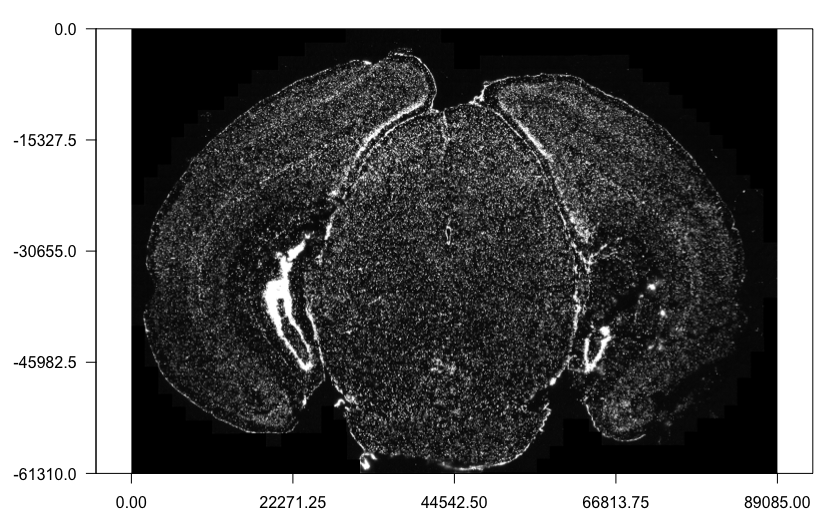
Attaching the giottoLargeImage to our Giotto object
(provided as a list of 1) and then updating it to map the image to the
spatial coordinates which are in microns.
# Adds the giottoLargeImage object to giotto object while also shifting values into the negatives
vizgen = addGiottoImage(gobject = vizgen,
largeImages = list(dapi0),
negative_y = TRUE)
# Read in image scale transform values
img_scale_DT = data.table::fread(img_scale_path)
x_scale = img_scale_DT$V1[[1]]
y_scale = img_scale_DT$V2[[2]]
x_shift = img_scale_DT$V3[[1]]
y_shift = -img_scale_DT$V3[[2]]
# Update image to reverse the above transformations to convert mosaic pixel to micron
# 'first_adj' means that the xy shifts are applied before the subsequent scaling
vizgen = updateGiottoLargeImage(gobject = vizgen,
largeImage_name = 'image',
x_shift = -x_shift,
y_shift = -y_shift,
scale_x = 1/x_scale,
scale_y = 1/y_scale,
order = 'first_adj')5.1 Check image alignment
spatPlot2D(gobject = vizgen,
largeImage_name = 'image',
point_size = 0.5,
show_image = TRUE)
5.2 Zooming in by subsetting the dataset
zoom = subsetGiottoLocs(gobject = vizgen,
x_min = 2000,
x_max = 2500,
y_min = -2500,
y_max = -2000)
spatPlot2D(gobject = zoom,
largeImage_name = 'image',
point_size = 1,
show_image = TRUE)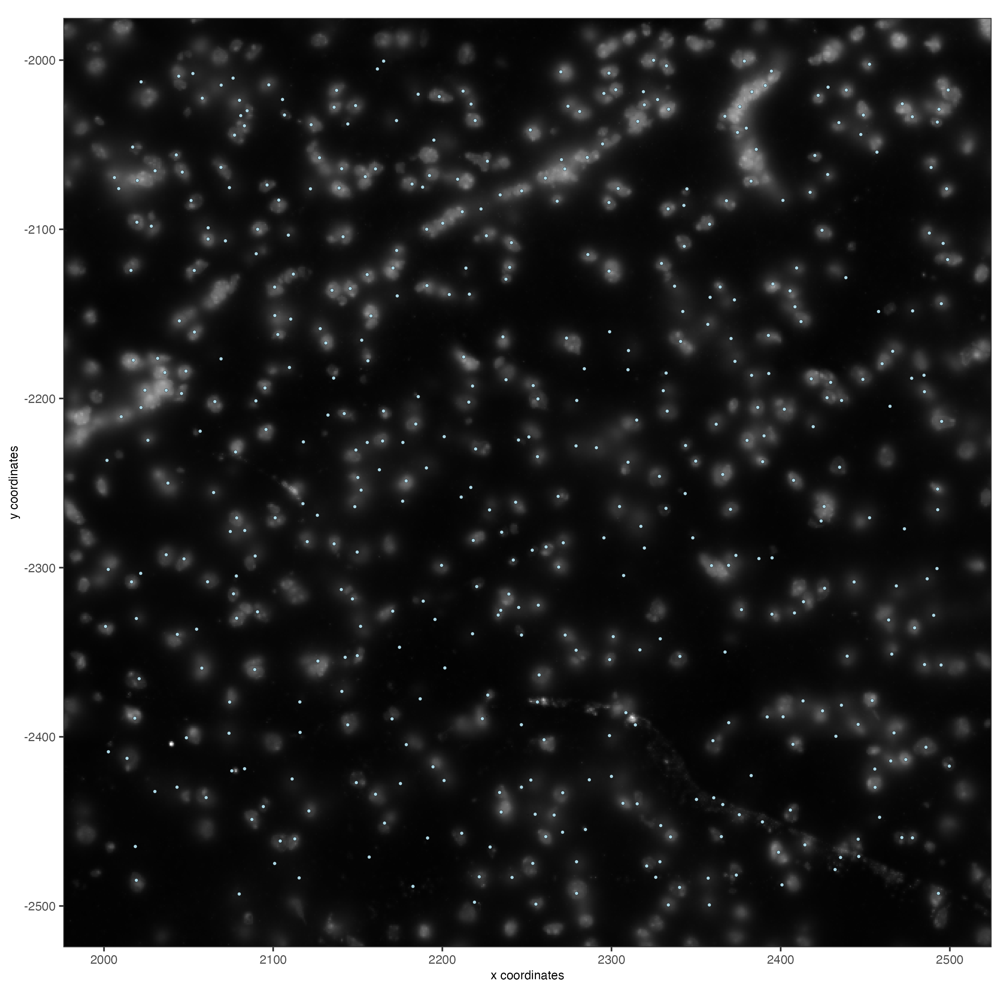
6. Data processing
vizgen <- filterGiotto(gobject = vizgen,
expression_threshold = 1,
feat_det_in_min_cells = 100,
min_det_feats_per_cell = 20)
vizgen <- normalizeGiotto(gobject = vizgen,
scalefactor = 1000,
verbose = TRUE)
# add gene and cell statistics
vizgen <- addStatistics(gobject = vizgen)6.1 Visualize the number of features per cell.
spatPlot2D(gobject = vizgen,
show_image = F,
point_alpha = 0.7,
cell_color = 'nr_feats',
color_as_factor = F,
point_border_col = 'grey',
point_border_stroke = 0.01,
point_size = 0.5)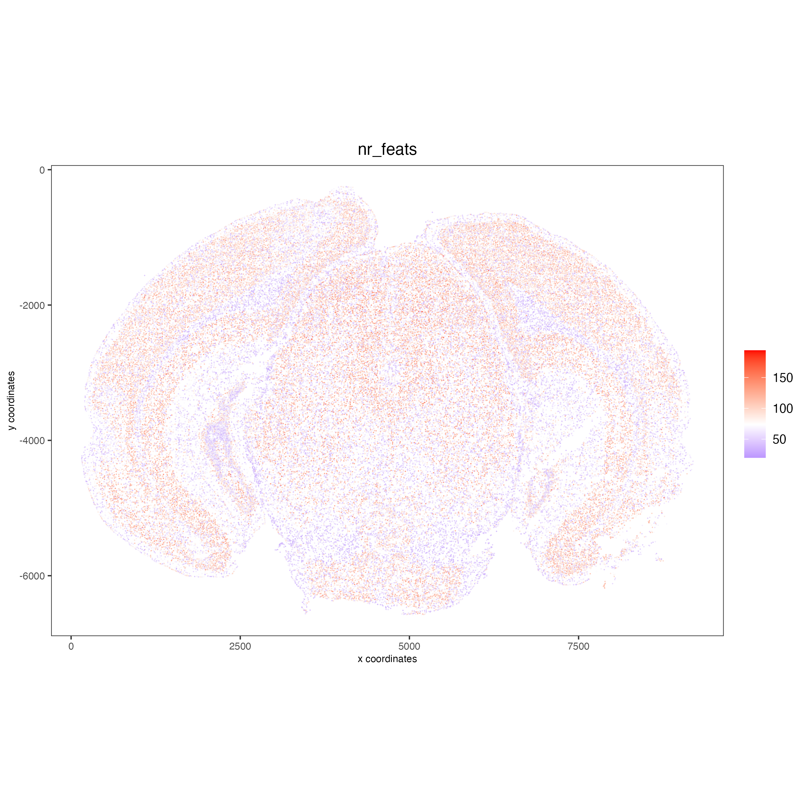
7. Dimension reduction
Skipping highly variable feature (HVF) detection. PCA will be calculated based on all available genes.
vizgen <- runPCA(gobject = vizgen,
center = TRUE,
scale_unit = TRUE)
# visualize variance explained per component
screePlot(vizgen,
ncp = 30)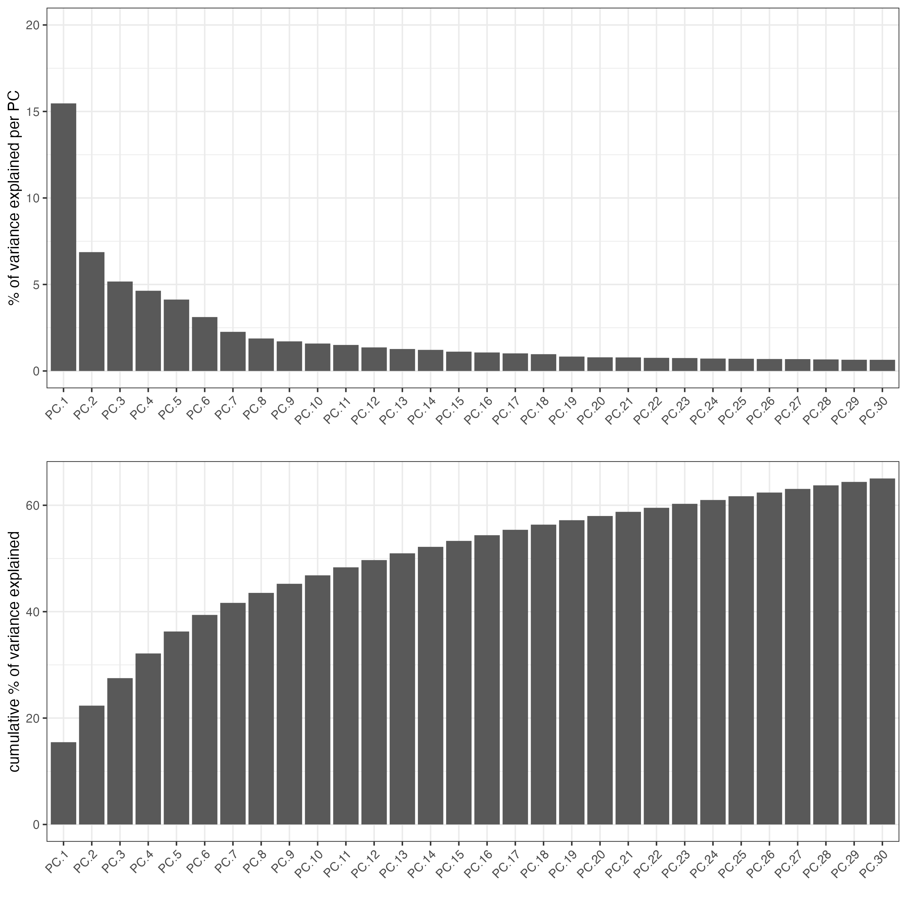
plotPCA(gobject = vizgen,
point_size = 0.5)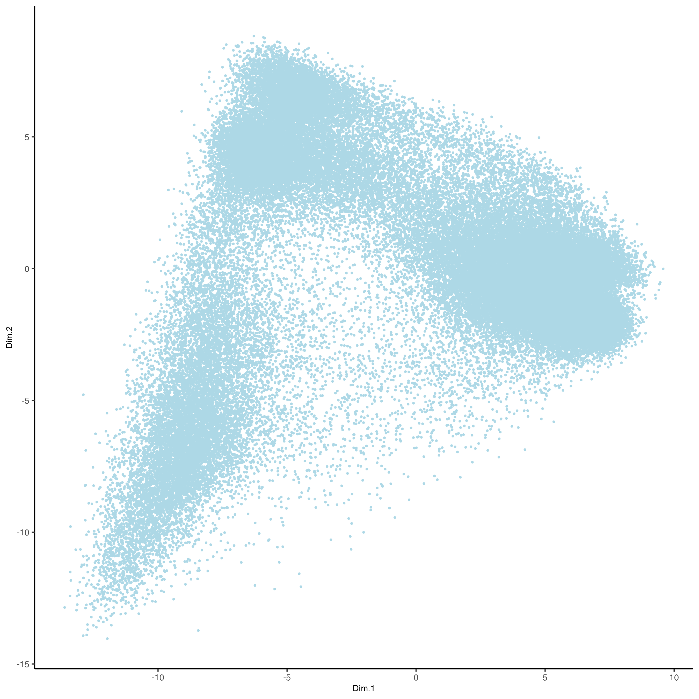
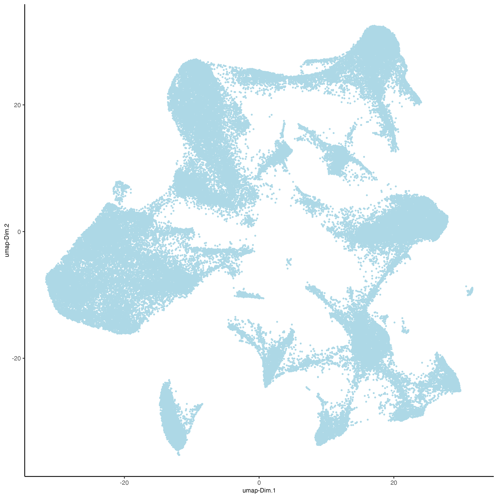
8. Leiden Clustering
Calculate nearest neighbor network and perform Leiden clustering.
vizgen <- createNearestNetwork(vizgen,
dimensions_to_use = 1:10,
k = 15)
# Default name for the results is 'leiden_clus' which is then appended to the cell metadata
vizgen <- doLeidenCluster(vizgen,
resolution = 0.2,
n_iterations = 100)Cell Metadata Preview
cell_ID fov volume leiden_clus
1: 110883424764611924400221639916314253469 0 432.1414 9
2: 135188247894899244046039873973964001182 0 1351.8026 9
3: 164766962839370328502017156371562646881 0 1080.6533 9
4: 165747897693809971960756442245389760838 0 1652.0007 9
5: 260943245639750847364278545493286724628 0 1343.3786 9
---
78258: 165273009496786595275688065919008183969 1225 1159.6232 9
78259: 250474226357477911702383283537224741401 1225 1058.0623 9
78260: 66106840181174834341279408890707577820 1225 1155.3068 9
78261: 66165211106933093510165165316573672348 1225 394.8081 9
78262: 71051447268015582817266088343399517927 1225 798.6088 9Visualize the Leiden clustering results (‘leiden_clus’) mapped onto the UMAP dimension reduction.
plotUMAP(vizgen,
cell_color = 'leiden_clus',
point_size = 0.5)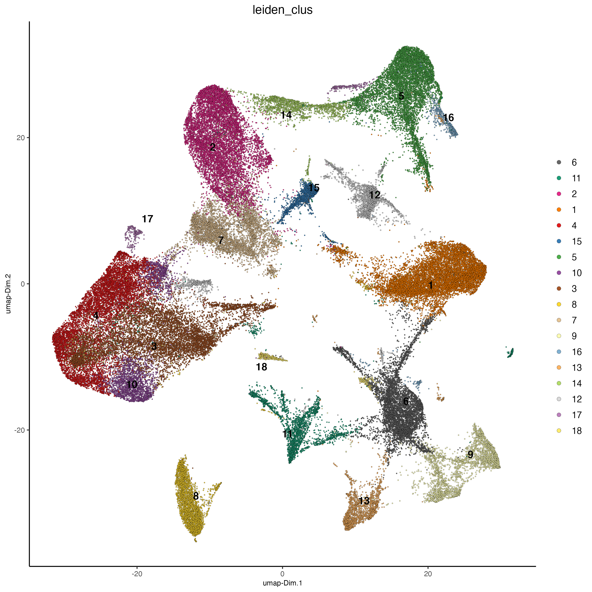
Visualize the leiden clustering mapped onto the spatial data.
spatPlot2D(gobject = vizgen,
cell_color = 'leiden_clus',
point_size = 0.5,
background_color = 'black')
9. Spatial expression patterns
Spatially interesting gene expression can be detected by first generating a spatial network then performing Binary Spatial Extraction of genes.
# create spatial network based on physical distance of cell centroids
vizgen = createSpatialNetwork(gobject = vizgen,
minimum_k = 2,
maximum_distance_delaunay = 50)
# perform Binary Spatial Extraction of genes
km_spatialgenes = binSpect(vizgen)Preview km_spatialgenes
print(km_spatialgenes$feats[1:30])[1] "Slc47a1" "Chat" "Th" "Insrr" "Slc17a7" "Pln"
[7] "Lmod1" "Blank-119" "Hcar1" "Glp1r" "Ptgdr" "Avpr2"
[13] "Gpr20" "Myh11" "Glp2r" "Npy2r" "Gpr182" "Chrm1"
[19] "Adgrd1" "Mrgprf" "Trhr" "Gfap" "Slc17a8" "Nmbr"
[25] "Pth2r" "Rxfp1" "Musk" "F2rl1" "Dgkk" "Chrm5"
# visualize spatial expression of select genes obtained from binSpect
spatFeatPlot2D(vizgen,
expression_values = 'scaled',
feats = km_spatialgenes$feats[c(1,2,3,5,16,22)],
cell_color_gradient = c('blue', 'white', 'red'),
point_shape = 'border',
point_border_col = 'grey',
point_border_stroke = 0.01,
point_size = 0.2,
cow_n_col = 2)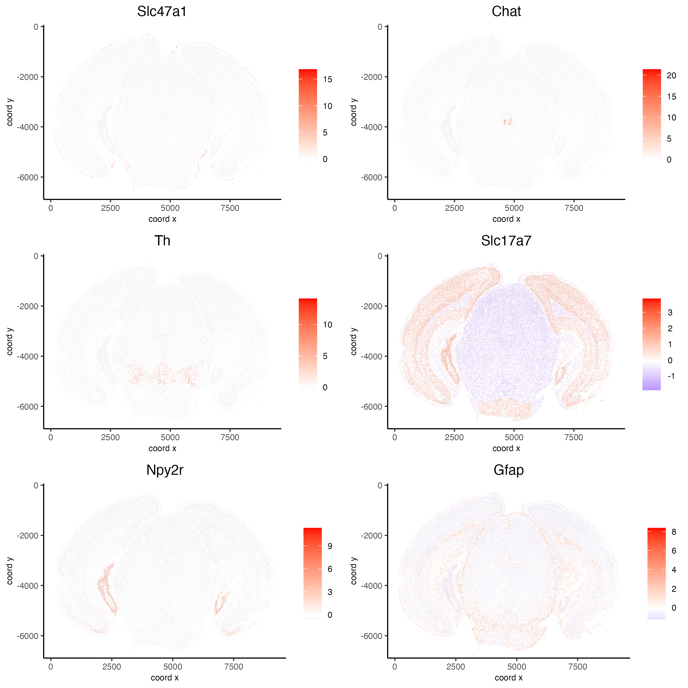
10. Working with subcellular information
These steps may require a strong computer.
Vizgen provides the raw information used to generate the aggregated data through the detected_transcripts.csv and cell_boundaries hdf5 files. Giotto can also work directly with this information.
10.1 (Optional) Define region of interest and find FOVs needed
Loading information by only grabbing the needed FOVs can cut down on computational requirements.
subsetFOVs = meta_dt[center_x > 2000 & center_x < 3100 &
center_y > 2500 & center_y < 3500]$fov
subsetFOVs = unique(subsetFOVs)FOVs needed
print(subsetFOVs)[1] 220 221 222 223 224 225 245 246 247 248 249 250 275 276 277 278 279 280 302
[20] 303 304 305 306 307 330 331 332 333 334 335 358 359 360 361 362 363Note: The following steps will be assuming that this step was run.
10.2 Creating a giottoPolygon object
Cell boundary annotations are represented in Giotto as
giottoPolygon objects which can be previewed by directly
plotting them.
# read polygons and add them to Giotto
# fovs param is optional
# polygon_feat_types determines which Vizgen polygon z slices are loaded (There are 0 - 6)
polys = readPolygonFilesVizgenHDF5(boundaries_path = bound_path,
polygon_feat_types = c(0,6),
flip_y_axis = TRUE,
fovs = subsetFOVs)
# polys is produced as a list of 2 giottoPolygon objects (z0 and z6)
# previewing the first one...
plot(polys[[1]])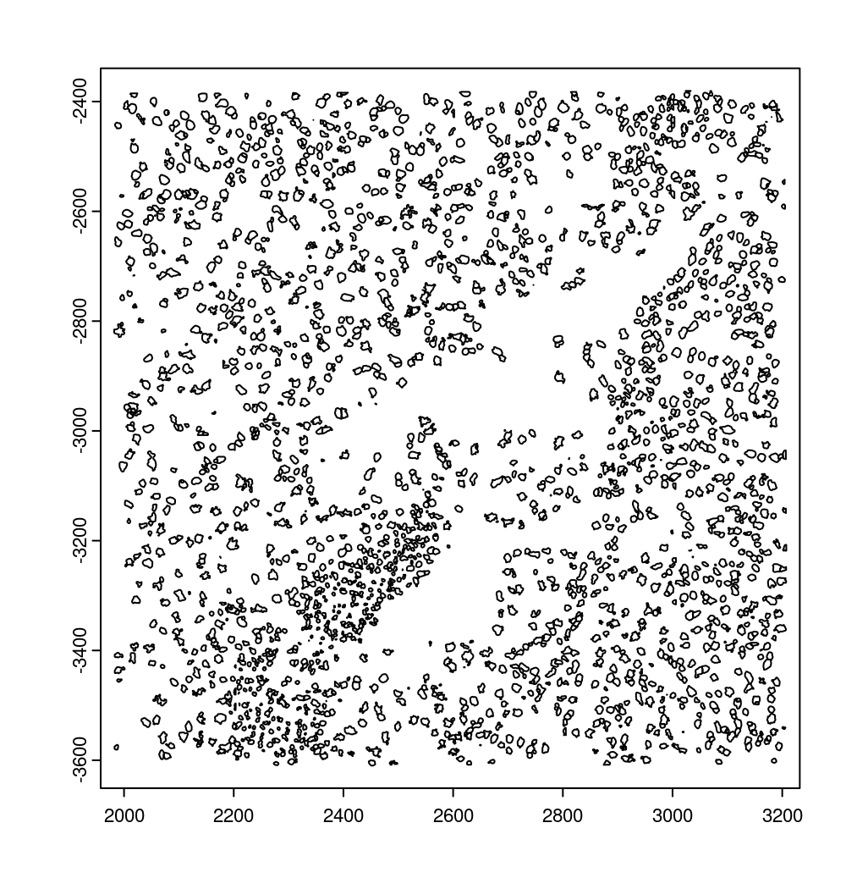
10.3 Creating a giottoPoints object
Giotto represents single-molecule transcript level spatial data as
giottoPoints objects.
tx_dt = data.table::fread(tx_path)
# select transcripts in FOVs
tx_dt_selected = tx_dt[fov %in% subsetFOVs]
tx_dt_selected$global_y = -tx_dt_selected$global_y
# (note the inverted y is the same as when spatial locations were loaded)
# create Giotto points from transcripts
gpoints = createGiottoPoints(x = tx_dt_selected[,.(global_x, global_y, gene, global_z)])
# preview the giottoPoints object (Including specific feats to plot is highly recommended)
# Not providing the feats param will plot ALL features detected
plot(gpoints,
feats = c('Gfap', 'Ackr1'),
point_size = 0.1)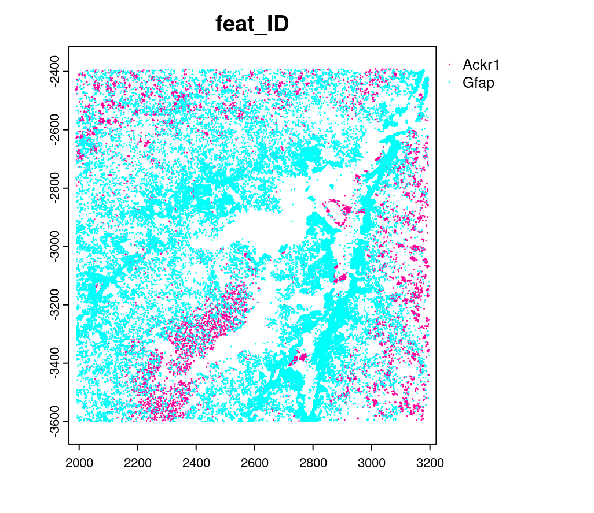
10.4 Creating a subcellular Giotto object
# Create new giotto instructions to set different save directory if desired
# instrs_sub = createGiottoInstructions(show_plot = FALSE,
# return_plot = FALSE,
# save_plot = TRUE,
# save_dir = "path/to/subcellular/save/folder")
vizgen_subcellular = createGiottoObjectSubcellular(gpoints = list(rna = gpoints),
gpolygons = polys,
# instructions = instrs_sub
)
# Find polygon centroids and generate associated spatial locations
vizgen_subcellular = addSpatialCentroidLocations(vizgen_subcellular,
poly_info = c('z0', 'z6'))
# Append images **(Details about these functions can be found in step 5)**
# Run following two commented lines if skipping to this step
# dapi0 = createGiottoLargeImage(raster_object = img_path, name = 'image')
# img_scale_DT = data.table::fread(img_scale_path)
vizgen_subcellular = addGiottoImage(gobject = vizgen_subcellular,
largeImages = list(dapi0), negative_y = TRUE)
x_scale = img_scale_DT$V1[[1]] ; y_scale = img_scale_DT$V2[[2]]
x_shift = img_scale_DT$V3[[1]] ; y_shift = -img_scale_DT$V3[[2]]
vizgen_subcellular = updateGiottoLargeImage(gobject = vizgen_subcellular,
largeImage_name = 'image', x_shift = -x_shift, y_shift = -y_shift,
scale_x = 1/x_scale, scale_y = 1/y_scale, order = 'first_adj')Alternatively to append subcellular data to existing giotto object.
The subcellular information can also be attached to giotto objects built with the pre-aggregated information.
# Subset dataset to work with smaller area
vizgen_subset = subsetGiottoLocs(vizgen,
x_min = 2000, x_max = 3000,
y_min = -3500, y_max = -2500)
# add points to Giotto object
vizgen_subset = addGiottoPoints(gobject = vizgen_subset,
gpoints = list(rna = gpoints))
# There will be a warning that 14 features are not present in vizgen_subset
# (They were previously removed during data processing in step 6)
# add polygons to Giotto object
vizgen_subset = addGiottoPolygons(gobject = vizgen_subset,
gpolygons = polys)
# If the polygons had not already been read readPolygonFilesVizgen() should be used instead
# vizgen_subset = readPolygonFilesVizgen(gobject = vizgen_subset,
# boundaries_path = bound_path,
# polygon_feat_types = c(0,6)) # Defines which z slices (polys) are read in
# Calculate centroid locations
vizgen_subset = addSpatialCentroidLocations(vizgen_subset,
poly_info = c('z0', 'z6'))Visualize subset
spatPlot2D(gobject = vizgen_subset,
show_image = TRUE,
largeImage_name = 'image',
cell_color = 'leiden_clus',
point_size = 2.5)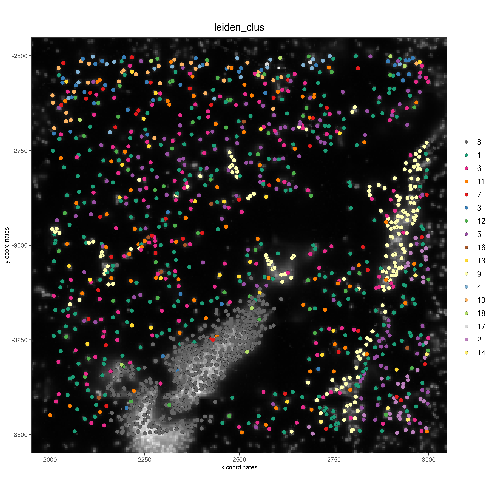
# identify genes for visualization
gene_meta = fDataDT(vizgen_subset)
data.table::setorder(gene_meta, perc_cells)
gene_meta[perc_cells > 25 & perc_cells < 50]
# visualize points with z0 polygons (confocal plane)
spatInSituPlotPoints(vizgen_subset,
feats = list('rna' = c("Oxgr1", "Htr1a", "Gjc3", "Axl",
'Gfap', "Olig1", "Epha7")),
polygon_feat_type = 'z0',
use_overlap = FALSE,
point_size = 0.1,
polygon_line_size = 1,
show_polygon = TRUE,
polygon_bg_color = 'white',
polygon_color = 'white')
# visualize select genes with z0 polygons (confocal plane)
spatInSituPlotPoints(vizgen_subcellular,
feats = list('rna' = c("Oxgr1", "Htr1a", "Gjc3", "Axl",
'Gfap', "Olig1", "Epha7")),
polygon_feat_type = 'z0',
use_overlap = FALSE,
point_size = 0.1,
polygon_line_size = 0.1,
show_polygon = TRUE,
polygon_bg_color = 'white',
polygon_color = 'white',
coord_fix_ratio = TRUE,
save_param = list(base_height = 10,
base_width = 10))
# Zoom in further and visualize with image
vizgen_subcellular_zoom = subsetGiottoLocs(vizgen_subcellular,
poly_info = c('z0','z6'),
x_min = 2400, x_max = 2600,
y_min = -3200, y_max = -3000)
spatInSituPlotPoints(vizgen_subcellular_zoom,
feats = list('rna' = c("Oxgr1", "Htr1a", "Gjc3", "Axl",
'Gfap', "Olig1", "Epha7")),
polygon_feat_type = 'z0',
use_overlap = FALSE,
point_size = 0.5,
polygon_line_size = 0.2,
show_polygon = TRUE,
polygon_bg_color = 'white',
polygon_color = 'white',
polygon_alpha = 0.1,
show_image = TRUE,
largeImage_name = 'image',
coord_fix_ratio = TRUE,
save_param = list(base_height = 10,
base_width = 10))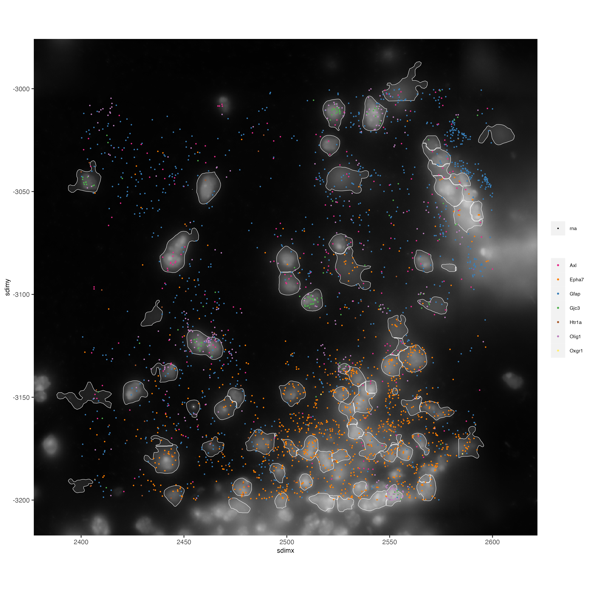
spatInSituPlotPoints(vizgen_subcellular_zoom,
feats = list('rna' = c("Oxgr1", "Htr1a", "Gjc3", "Axl",
'Gfap', "Olig1", "Epha7")),
polygon_feat_type = 'z6', # Use polygon from z slice 6 this time
use_overlap = FALSE,
point_size = 0.5,
polygon_line_size = 0.2,
show_polygon = TRUE,
polygon_bg_color = 'white',
polygon_color = 'white',
polygon_alpha = 0.1,
show_image = TRUE,
largeImage_name = 'image',
coord_fix_ratio = TRUE,
save_param = list(base_height = 10,
base_width = 10))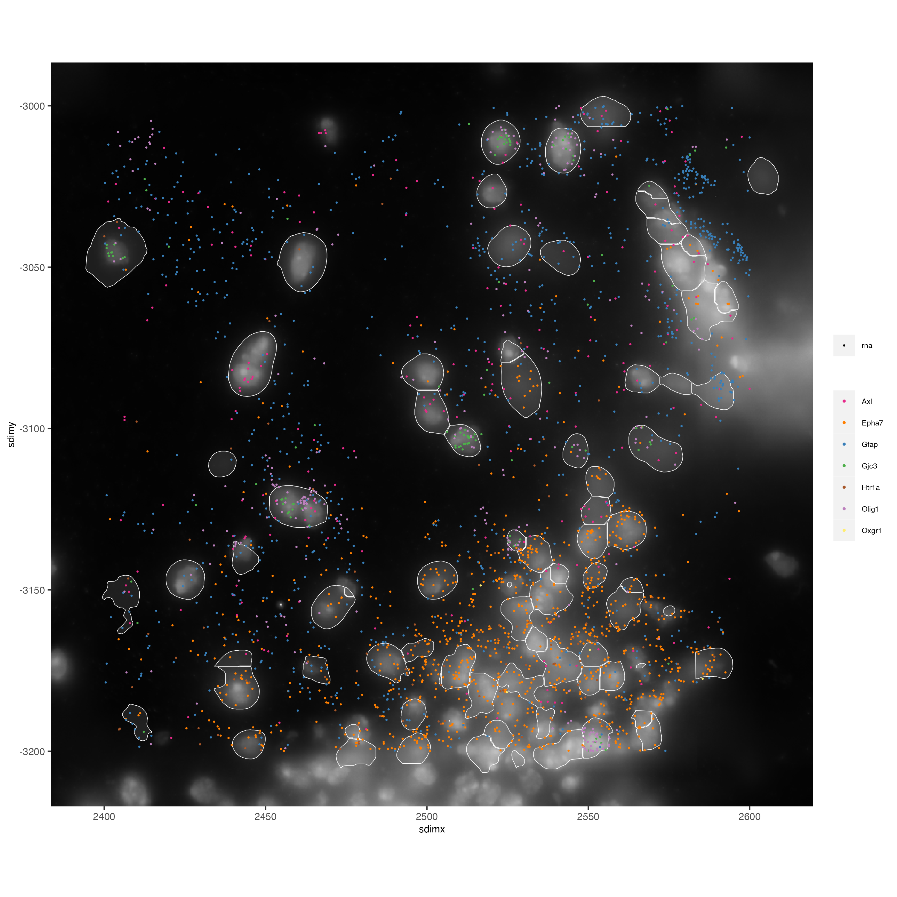